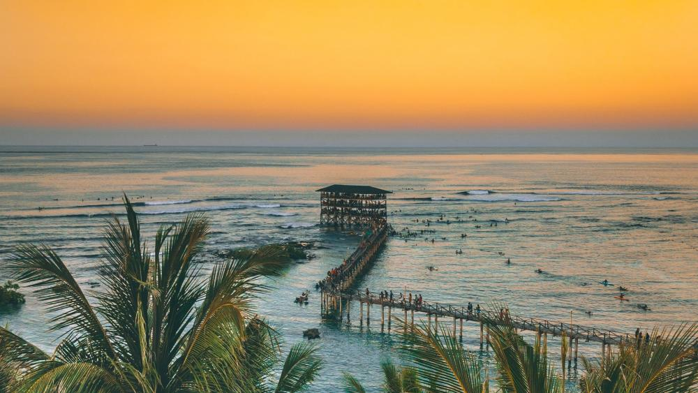
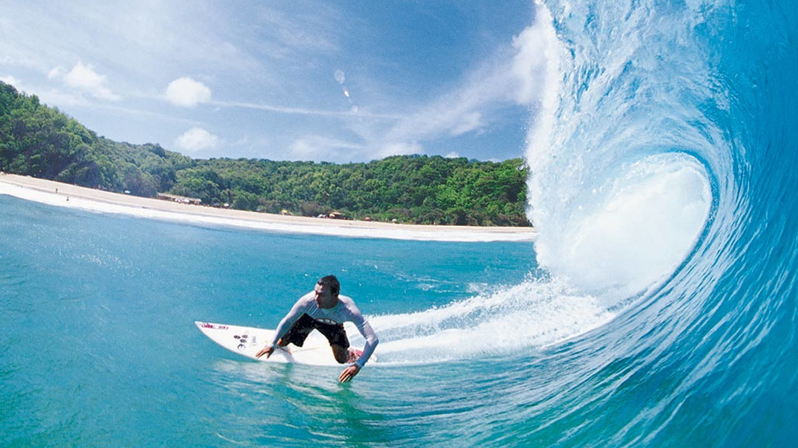
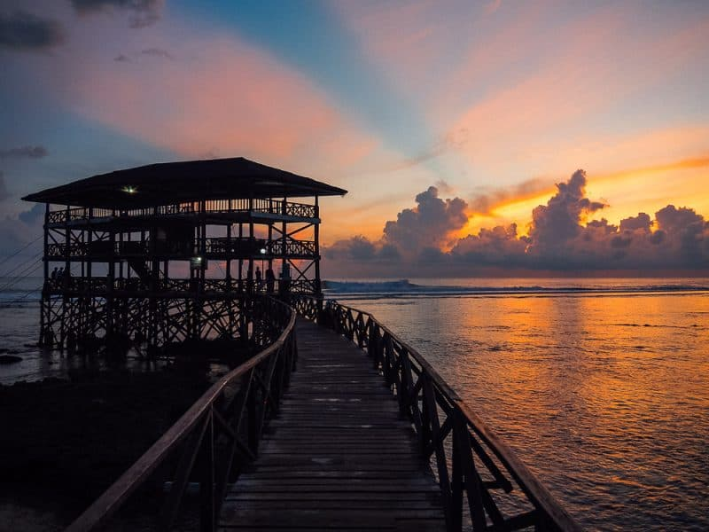
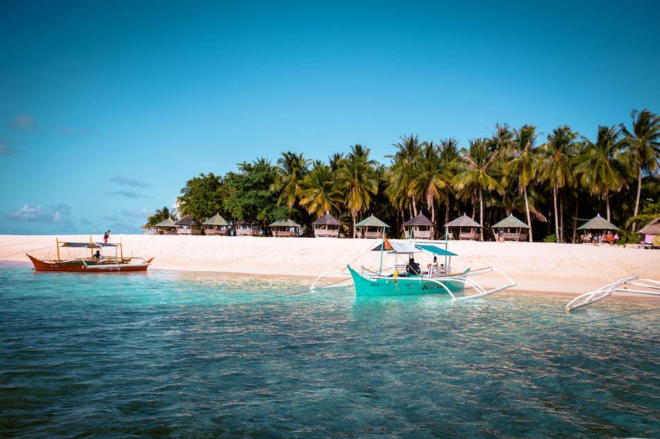
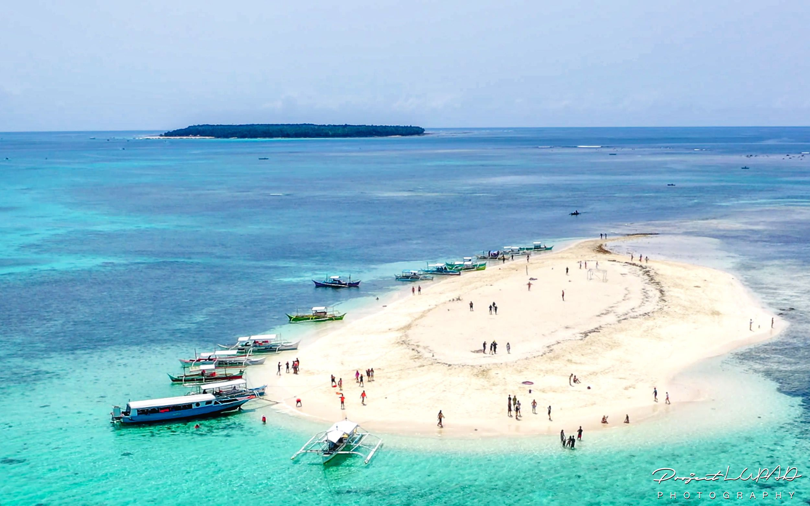
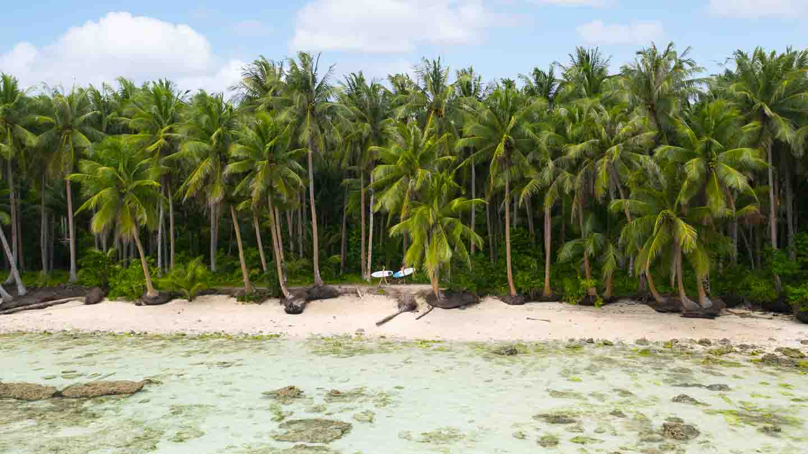
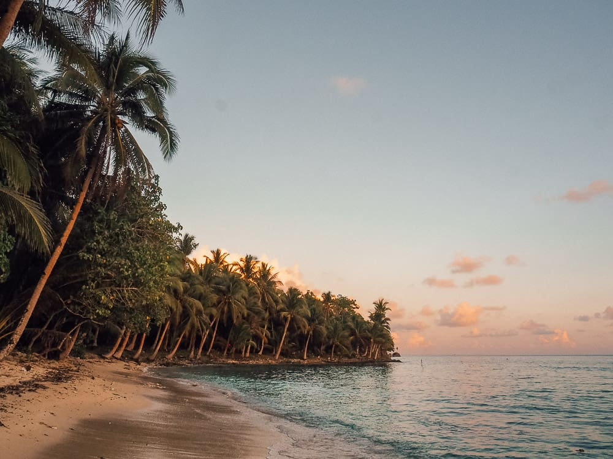

"Welcome to the heart of the Philippines - General Luna. This enchanting destination offers a perfect blend of natural wonders, cultural richness, and adventure. Join us as we take you on a journey through this hidden gem."
TOP ATTRACTIONS



Cloud 9 Surfing Spot
"General Luna is a surfer's paradise, and Cloud 9 is its crown jewel. With world-class waves and a laid-back atmosphere, it's a must-visit for surf enthusiasts of all levels."


3 Island Daku Island Guyam Island Naked Island
Naked Island: This name might raise eyebrows, but it refers to an island devoid of any vegetation or trees. What makes it so special is its pristine, powdery white sandbar that emerges during low tide. Visitors can bask in the sun, enjoy crystal-clear waters, and take in the breathtaking 360-degree views of the surrounding turquoise sea. Naked Island is often a stop on island-hopping tours and is perfect for sunbathing and snorkeling.
Daku Island: "Daku" means "big" in the local language, and the island certainly lives up to its name. It's the largest among the three and is known for its long, picturesque beach with swaying coconut palms. Travelers can relax on the sandy shores, swim in the clear waters, and enjoy delicious seafood cooked by locals in makeshift huts. It's an ideal spot for a leisurely picnic and beachcombing.
Guyam Island: Guyam Island is the smallest of the three and is often described as a tropical paradise. It's characterized by its compact size, lush vegetation, and a vibrant coral reef just off its shores. The island is a haven for snorkelers, as the coral gardens teem with colorful marine life. It's also an excellent spot for a quiet escape and a beachfront picnic.


Secret Beach Siargao
The Secret Beach in Siargao is a hidden gem that epitomizes the untouched beauty and tranquil charm of the Philippines' natural wonders. Nestled away from the crowds and accessible through a small opening in a limestone formation, this secluded paradise offers a unique and unforgettable experience for travelers seeking an off-the-beaten-path adventure.